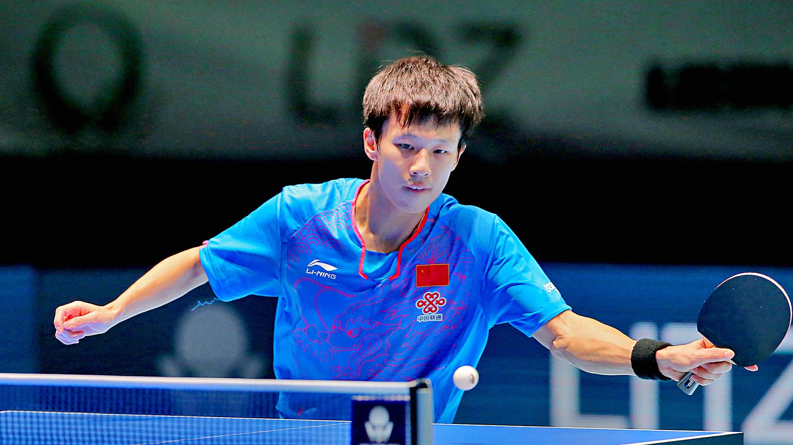

Lin Gaoyuan ever closer to name on invitation list
Currently in a rich vein of form, the winner at the Seamaster 2017 ITTF World Tour Platinum, Hybiome Austrian Open; China’s Lin Gaoyuan makes the most significant progress on the Standings, following the conclusion of play in Linz on Sunday 24th September.
Formerly at no.31, he is now listed at no.5 (613 points) and thus has a realistic chance to be amongst the 16 names invited to compete in the Seamaster 2017 ITTF World Tour Grand Finals to be held in Astana, Kazakhstan from Thursday 14th to Sunday 17th December.
However, in order to meet the basic qualification criteria of five appearances, he must compete in one further ITTF World Tour tournament this year; he must play in either Germany or Sweden; for both events the entry procedure is still open.
It is the same scenario for colleague Fang Bo, beaten at the semi-final stage in Linz by Yan An, also from China; similar to Lin Gaoyuan, the Seamaster 2017 ITTF World Tour Platinum, Hybiome Austrian Open was his fourth excursion of the year. He remains in the no.10 spot (531 points). Alas for Yan An, beaten by Lin Gaoyuan in the Linz final, hopes of a December visit to Astana are not on the agenda; he climbs from no.17 to no.9 (550 points) but has only appeared twice on this year’s ITTF World Tour.
Conversely, for Frenchman Simon Gauzy, who experienced a semi-final defeat in Austria at the hands of Lin Gaoyuan, he can book his flights to Astana. He advances one place to no.8 (565 points); he has now made six appearances this year.
China’s Ma Long and Germany’s Dimitrij Ovtcharov continue to lead the Men’s Singles Standings (1,050 points), being ahead of Timo Boll, likewise from Germany (700 points) and Fan Zhendong, also from China (650 points). Notably Ma Long and Fan Zhendong have made three appearances this year, for Dimitrij Ovtcharov and Timo Boll is it four each. The names of Dimitij Ovtcharov and Timo Boll both appear on the entry list for the forthcoming Seamaster 2017 ITTF World Tour German Open.
Top spot retained on the Men’s Singles Standings, it is the same on the Women’s Singles Standings where China’s Chen Meng maintains pole position (1,631 points). Colleague Wang Manyu, the winner in Austria and the victor over Chen Meng at the quarter-final stage moves into a clear second place (1,300 points). Sun Yingsha, her semi-final victim with whom she previously shared second spot, is now in third position (1,000 points). China’s Gu Yuting, the silver medallist in Linz, shares second place alongside Japan’s Kasumi Ishikawa (700 points).
Pertinently, Chen Meng has made three ITTF World Tour appearances this year, for Wang Manyu it is four, whilst the number in three apiece for Sun Yingsha and Gu Yuting. Kasumi Ishikawa has plied her skills on no less than eight occasions.
A continued run in first place for Chen Meng, in the Men’s Doubles Standings, it is the same. Japan’s Jin Ueda and Koki Niwa, the winners in Austria, continue in first place (675 points) with Germany’s Ruwen Filus and Ricardo Walther, the runners up, in third position alongside colleague Patrick Franziska and Denmark’s Jonathan Groth (338 points). Sandwiched in between is the Japanese partnership of Masataka Morizono and Yuya Oshma (628 points). All have met the criteria of competing in a minimum for ITTF World Tour tournaments this year to qualify for the Grand Finals.
First place for the Men’s Doubles winners in Linz; on the Women’s Doubles Standings, it is the same situation. Previously in sixth place, China’s Xingtong and Sun Yingsha head the list (600 points) but have only made two appearances this year as a pairing. They replace the combination of Sweden’s Matilda Ekholm and Hungary’s Georgina Pota at the top of the order; the Europeans now occupy second place (519 points). Pertinently, having made six appearances as a pair this year, they are Astana bound.
Meanwhile, for China’s Xue Fei and Zhang Rui, the respective Under 21 Men’s Singles and Under 21 Women’s Singles winners in Linz, it is eighth spot on the listings. Korea’s Lim Jonghoon (650 points) and Japan’s Yuto Kizukuri (510 points) continue to occupy the top two places on the Under 21 Men’s Singles Standings; on the Under 21 Women’s Singles once again Japan’s Saki Shibata (482 points) and Maki Shiomi (438 points) reserve the leading places.
Latest Standings: Positions following conclusion of the Seamaster 2017 ITTF World Tour Platinum, Hybiome Austrian Open (Sunday 24th September)